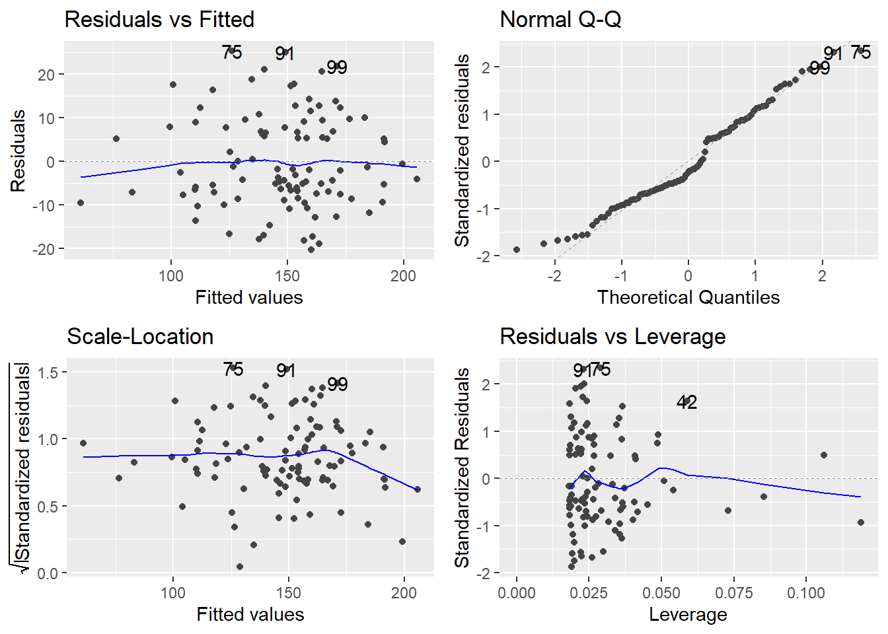
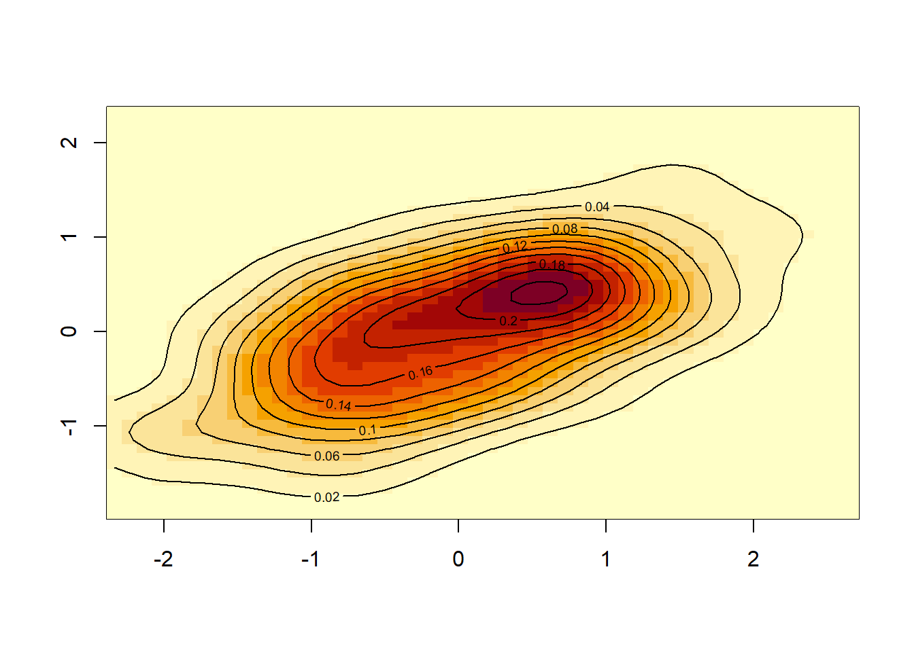

In this portfolio, I aim to be familiar with basic simulation
library(ggfortify)
# install.packages('ggfortify')x<-rnorm(25, mean=0, sd=100)
# produce N(0.3, 20) sample of size 25.
print(x)## [1] 78.5783919 -48.6760911 82.1872984 -193.3058837 -69.9214671
## [6] -110.4420711 -182.1855311 -104.7357116 17.3502480 -0.7920323
## [11] 159.3186468 -46.5060275 251.1047941 -209.6525022 -21.8217907
## [16] -17.5479677 -38.6764562 67.3345127 -190.8404457 9.5802376
## [21] 117.6044931 34.7087315 158.1322745 -34.7748120 -99.3102085t.test(x) # one sample t-test to see if the true mean score would be 0 or not ##
## One Sample t-test
##
## data: x
## t = -0.66377, df = 24, p-value = 0.5132
## alternative hypothesis: true mean is not equal to 0
## 95 percent confidence interval:
## -64.64641 33.18326
## sample estimates:
## mean of x
## -15.73157#p-value: 0.99. Although I generate the x data to be mean of zero, Sd was unrealistically high.
y<-rnorm(25, mean=0, sd=1)
# produce N(0.3, 20) sample of size 25.
print(y)## [1] 0.79339127 -0.60543547 -2.19636480 1.78504693 -0.97087049 0.26128846
## [7] -0.73638702 0.18798207 0.73815308 0.47690133 0.69829360 -1.06244633
## [13] -0.99415964 -0.43731534 2.14821281 -0.67841037 1.61931502 -0.39127677
## [19] 1.45184348 0.79156016 -0.10783755 0.31625290 0.07213807 0.17863253
## [25] -0.35497808t.test(y) # one sample t-test to see if the true mean score would be 0 or not ##
## One Sample t-test
##
## data: y
## t = 0.58859, df = 24, p-value = 0.5616
## alternative hypothesis: true mean is not equal to 0
## 95 percent confidence interval:
## -0.2991323 0.5378147
## sample estimates:
## mean of x
## 0.1193412#p-value becomes much lower than t.test(x)set.seed(1)
x=seq(-3,3,le=5)
print(x)## [1] -3.0 -1.5 0.0 1.5 3.0y=2+4*x+rnorm(5)
lm(y~x)##
## Call:
## lm(formula = y ~ x)
##
## Coefficients:
## (Intercept) x
## 2.129 4.222\[Y_{ij}=\alpha + \beta*x_{i} + e_{ij}\] \[\hat{\alpha} = 2.13\] \[\hat{\beta} = 4.22\]
group=rep(c("female","male"), each=3)
response=rnorm (n=6, mean=0, sd=2)
data.frame(group,response)## group response
## 1 female -1.6409368
## 2 female 0.9748581
## 3 female 1.4766494
## 4 male 1.1515627
## 5 male -0.6107768
## 6 male 3.0235623replicate(n = 3,
expr = rnorm(n = 5, mean = 0, sd = 1),
simplify=FALSE) # list output ## [[1]]
## [1] 0.38984324 -0.62124058 -2.21469989 1.12493092 -0.04493361
##
## [[2]]
## [1] -0.01619026 0.94383621 0.82122120 0.59390132 0.91897737
##
## [[3]]
## [1] 0.78213630 0.07456498 -1.98935170 0.61982575 -0.05612874replicate(n = 3,
expr = rnorm(n = 5, mean = 0, sd = 1),
)## [,1] [,2] [,3]
## [1,] -0.1557955 -0.10278773 -0.3942900
## [2,] -1.4707524 0.38767161 -0.0593134
## [3,] -0.4781501 -0.05380504 1.1000254
## [4,] 0.4179416 -1.37705956 0.7631757
## [5,] 1.3586796 -0.41499456 -0.1645236list1=list() # empty list to save output in.
for(i in 1:3){
list1[[i]]=rnorm(n=10,mean=0,sd=1)
}
print(list1)## [[1]]
## [1] -0.2533617 0.6969634 0.5566632 -0.6887557 -0.7074952 0.3645820
## [7] 0.7685329 -0.1123462 0.8811077 0.3981059
##
## [[2]]
## [1] -0.6120264 0.3411197 -1.1293631 1.4330237 1.9803999 -0.3672215
## [7] -1.0441346 0.5697196 -0.1350546 2.4016178
##
## [[3]]
## [1] -0.03924000 0.68973936 0.02800216 -0.74327321 0.18879230 -1.80495863
## [7] 1.46555486 0.15325334 2.17261167 0.47550953set.seed(99)
x1=rnorm(100,50,9)
x2=rbinom(100,1,0.5)
#
# x2<-ifelse(x2==0,"male","female")
# x2<-as.factor(x2)
error<-rnorm(100,0,10)
# generating DV
y=3*x1+2*x2+error
# creating model
model1<-lm(y~x1+x2)
summary(model1)##
## Call:
## lm(formula = y ~ x1 + x2)
##
## Residuals:
## Min 1Q Median 3Q Max
## -20.379 -7.459 -2.374 7.819 25.333
##
## Coefficients:
## Estimate Std. Error t value Pr(>|t|)
## (Intercept) -13.0851 6.7661 -1.934 0.056 .
## x1 3.2763 0.1396 23.475 <2e-16 ***
## x2 -0.3185 2.2628 -0.141 0.888
## ---
## Signif. codes: 0 '***' 0.001 '**' 0.01 '*' 0.05 '.' 0.1 ' ' 1
##
## Residual standard error: 10.96 on 97 degrees of freedom
## Multiple R-squared: 0.8566, Adjusted R-squared: 0.8536
## F-statistic: 289.7 on 2 and 97 DF, p-value: < 2.2e-16autoplot(model1)
library(MASS)
biv<-mvrnorm(100, # sample size
mu=c(0,0), # Mu
Sigma = matrix(c(1,0.5,1,0.5),2)) # Covariance matrix
print(head(biv,10))## [,1] [,2]
## [1,] 0.21740062 0.24372187
## [2,] 0.02515622 0.20612317
## [3,] 1.07547205 0.24195126
## [4,] -0.81302102 0.51264117
## [5,] -1.60905658 0.12691964
## [6,] -0.95313899 -0.23739452
## [7,] 0.95274257 -0.01162121
## [8,] -1.04822280 -0.76743874
## [9,] 0.10481322 0.28984139
## [10,] -0.58520007 0.30456387visualization
# kernel density estimation
# TMI: Yoo Ri currently did not learn what kernel density is.
biv.kd<-kde2d(biv[,1], biv[,2], n=50)
image(biv.kd)
contour(biv.kd, add=TRUE)
Generating multivariate normal data
library(MASS)
#creating random multivariate data that has
# sample size of 50, mean of 0.5,0,10, and covariance matrix is as sigma
mul1 <- MASS::mvrnorm(n = 50,
mu = c(0.5, 0, 10),
Sigma = matrix(c(1, 0.2, 0.3,
0.2, 1, 0.6,
0.3, 0.6, 1),
nrow = 3))
print(mul1)## [,1] [,2] [,3]
## [1,] 1.028299043 0.49299851 10.306684
## [2,] 1.946340024 0.15977911 10.998447
## [3,] 0.608743665 -1.67404915 6.689916
## [4,] 0.818315919 0.06978077 10.235603
## [5,] -2.397582590 -0.99912989 8.333358
## [6,] -1.596951030 -1.17963925 8.774990
## [7,] -0.989204961 -1.10363402 8.850178
## [8,] 2.023453487 -0.60080533 9.945701
## [9,] -0.852170244 0.12715146 9.702176
## [10,] -1.281551435 0.49792847 10.450958
## [11,] 0.769031762 0.60766349 10.956243
## [12,] 0.881271205 0.91791273 9.040802
## [13,] 1.532740759 2.36060063 12.172929
## [14,] -0.292140750 1.10946862 10.626114
## [15,] -0.100779895 0.32792726 11.240953
## [16,] 0.782663696 -0.63016137 7.929375
## [17,] 1.310126901 -0.16127999 9.545960
## [18,] 1.160138978 2.22832949 11.896473
## [19,] 1.233812290 0.13125300 9.834839
## [20,] 0.715461118 -0.15254027 10.785711
## [21,] -0.869761297 -1.73670693 8.789623
## [22,] 1.561214272 0.01860108 9.619598
## [23,] 0.766899923 0.04115885 10.555786
## [24,] -1.126940924 -1.15233962 8.621999
## [25,] -0.457199108 -0.76613387 9.855323
## [26,] -0.206186483 0.08998015 10.104040
## [27,] -0.039259876 0.54117013 10.942650
## [28,] 0.188073317 1.09005066 10.512192
## [29,] 1.418281851 0.49087103 10.771813
## [30,] 1.905544913 0.25742178 11.631258
## [31,] 0.977850805 0.64450459 9.940411
## [32,] -0.004213827 -0.82523577 10.747830
## [33,] 1.303631527 1.06001846 10.737239
## [34,] 0.335078221 -1.63231446 8.554735
## [35,] -1.049470896 -0.77738514 9.958422
## [36,] 1.220990492 1.34034713 9.576383
## [37,] 1.289822360 0.37179346 10.255645
## [38,] 0.313808888 1.19364943 10.795765
## [39,] 0.584940726 -0.06476239 10.750845
## [40,] 1.561916207 0.03496650 9.704711
## [41,] 1.165115638 0.20110712 9.239709
## [42,] 1.230384261 -0.69448991 7.851893
## [43,] 0.068486407 -0.17048247 8.732160
## [44,] -0.375259154 0.13316890 8.915430
## [45,] -1.202786713 0.83105915 9.834918
## [46,] -0.109808854 -0.14893203 9.987075
## [47,] 1.151659037 1.11174162 10.480434
## [48,] 0.406165449 -0.10188474 10.032519
## [49,] 0.175419555 0.15733456 11.540861
## [50,] 2.532515506 -0.60505926 9.113866Correlation matrix
cor(mul1)## [,1] [,2] [,3]
## [1,] 1.0000000 0.3380068 0.2583901
## [2,] 0.3380068 1.0000000 0.6914499
## [3,] 0.2583901 0.6914499 1.0000000